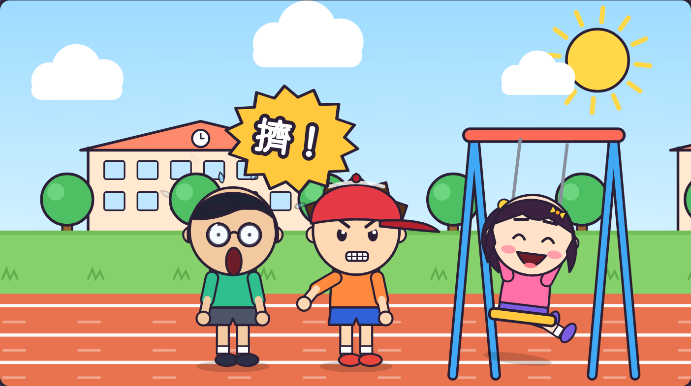
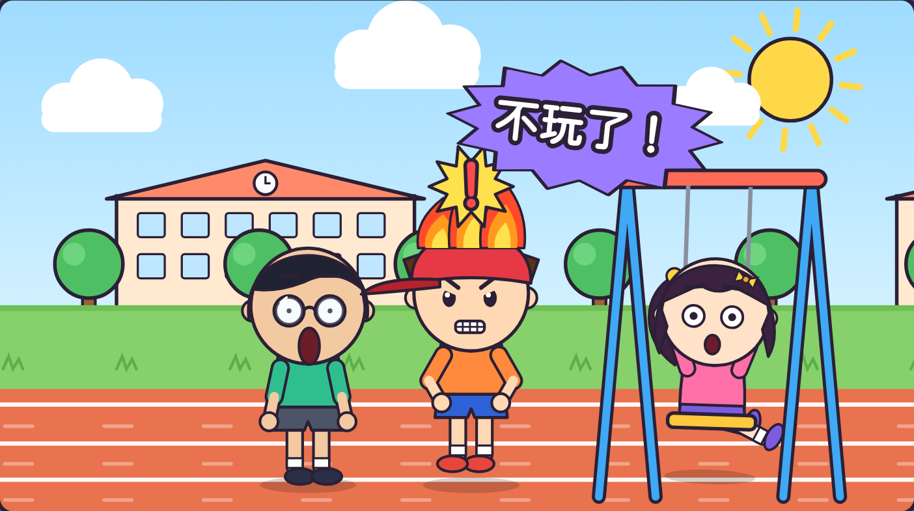
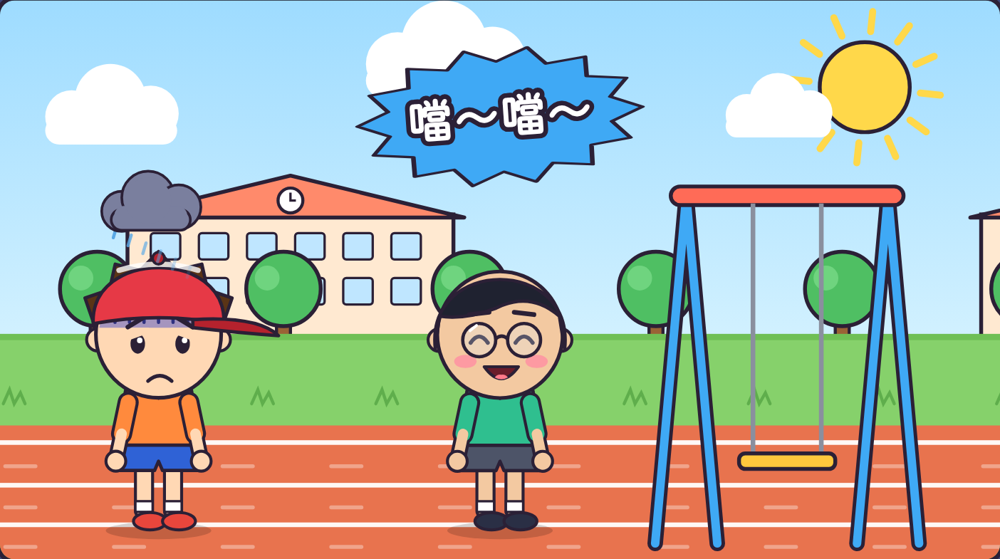
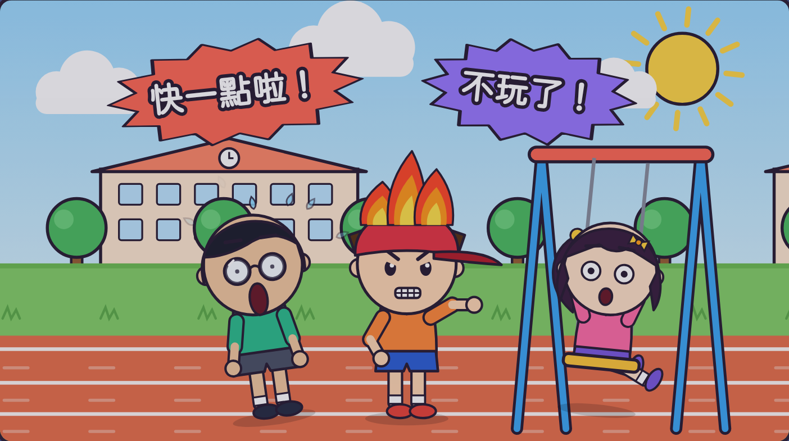
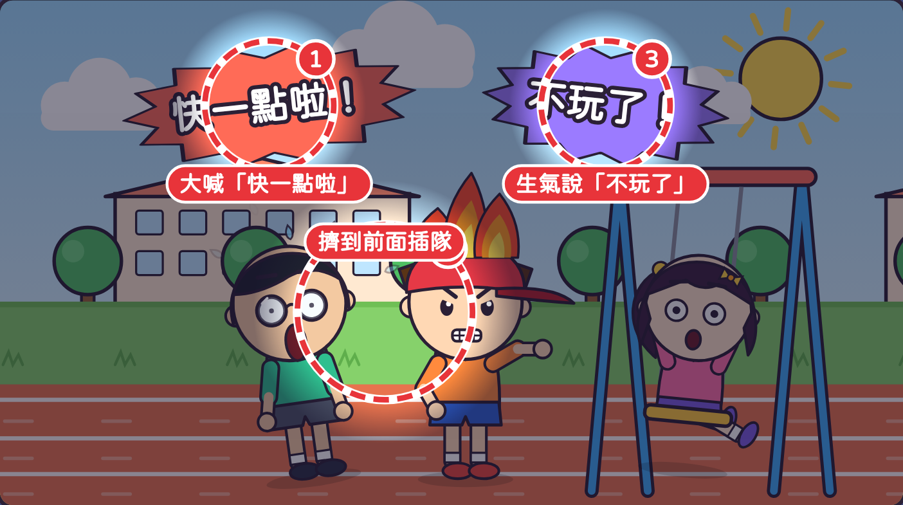
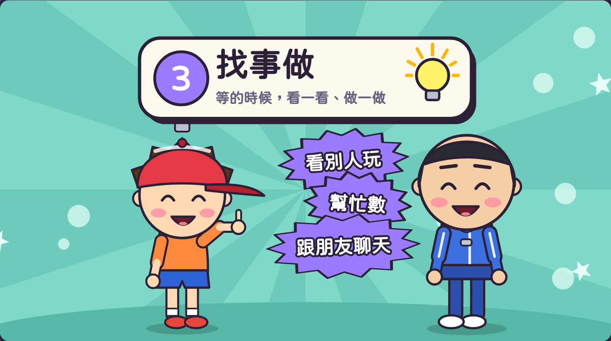
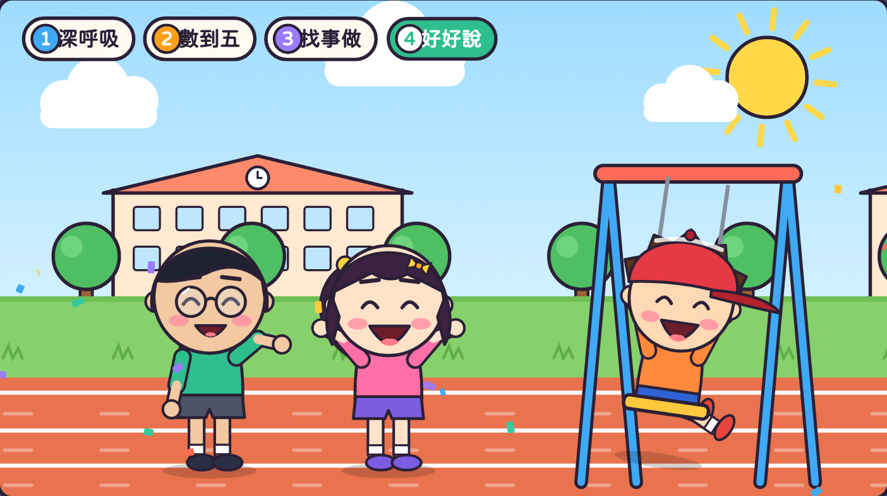
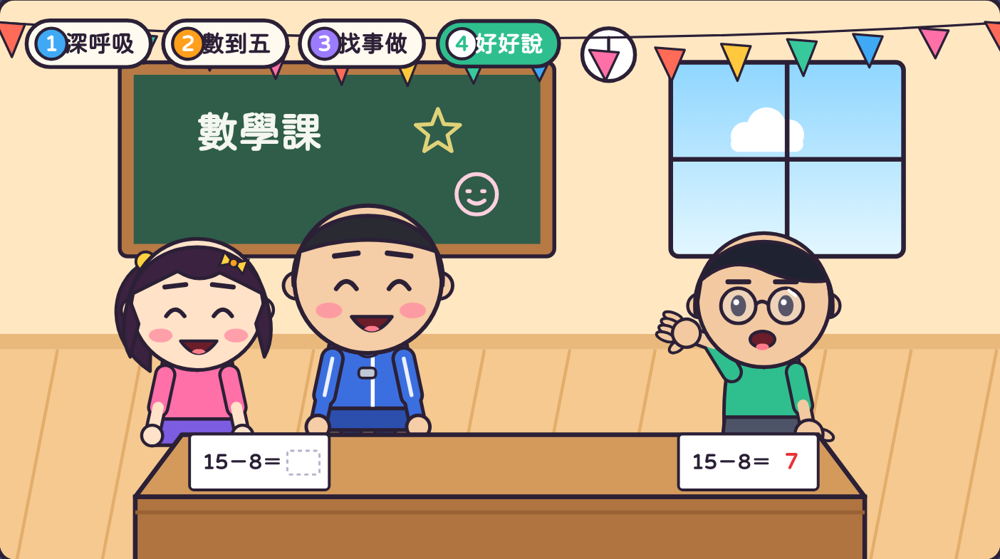

虎尾小劇場｜三年級資源班
1
可是不催人、不插隊。
2
深呼吸、數到五、找事做、好好說。
虎尾小劇場｜慢慢等，我有耐心
想一想
排隊盪鞦韆、溜滑梯
排隊裝飯
老師在幫別人
虎尾小劇場｜慢慢等，我有耐心
「快一點啦！
換我了啦！」

阿樂擠到前面，
插隊！
虎尾小劇場｜慢慢等，我有耐心

阿樂生氣說：
「不玩了！」

阿樂一次都沒玩到，
心裡更煩了。
虎尾小劇場｜慢慢等，我有耐心

倒帶回去看
阿樂
哪裡做得不好？
有 3 個地方喔！
你找到幾個？
虎尾小劇場｜慢慢等，我有耐心

① 大喊「快一點啦」
② 擠到前面插隊
③ 生氣說「不玩了」
接下來學學看，
怎麼做會更好！
虎尾小劇場｜慢慢等，我有耐心
1
心慢下來
2
慢慢數
3
看一看、做一做
4
「請問⋯」
第 1 步
手放肚子，
吸氣～吐氣。
吸氣，肚子鼓起來；
吐氣，肚子扁下去。
一起吸氣！
虎尾小劇場｜慢慢等，我有耐心
第 2 步
伸出手，
一根一根慢慢數。
一、二、三、四、五
一起數！
虎尾小劇場｜慢慢等，我有耐心
第 3 步

找事做，
時間過得比較快。
你會做什麼？
虎尾小劇場｜慢慢等，我有耐心
第 4 步
「請問，
可以換我了嗎？」
老師在忙時：
舉手說「等一下可以教我嗎？」
換你說說看！
虎尾小劇場｜慢慢等，我有耐心

阿樂好好說，
開心地盪鞦韆！

阿凱舉手等一等，
老師謝謝他耐心等。
虎尾小劇場｜慢慢等，我有耐心
老師抽一張情境卡，用耐心四步驟演出來。
情境 1
情境 2
情境 3
虎尾小劇場｜慢慢等，我有耐心
一起念口訣
深呼吸，數到五，
找事做，好好說，
等一等，
心不煩！
打開「耐心等待挑戰題」，
回答 9 個問題。
9 題
虎尾小劇場｜慢慢等，我有耐心